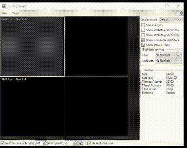
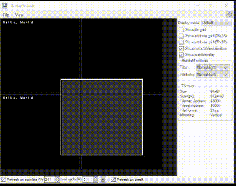
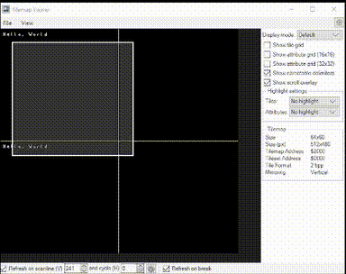

Now, while a game that doesn't scroll or move from a single screen is perfectly acceptable, certain kinds of games need scrolling.
Well, you can't just rewrite an entire nametable in one frame. Since it needs to be in vBlank to prevent graphical glitches, there simply isn't enough time
in a frame, let alone a single vBlank interval.
So what's the solution? Well, the PPU has a scrolling feature. The PPU Scroll Register, at $2005 (Mesen label: PpuScroll_2005), can scroll the screen without
needing any writes to VRAM.
The PPU Scroll ($2005) register needs to be written to twice: The first write is the X Scroll value, and the second write is the Y Scroll value.
lda XScroll
sta PpuScroll_2005
lda YScroll
sta PpuScroll_2005
By incrementing X and Y scroll once per frame, we get this result:

However, with just the PPU Scroll ($2005) register, there is a problem: when reaching the edge of the screen, the scroll value rolls back to 0 and the screen snaps
back to the first nametable.
However, there is a solution. In the PPU Control ($2000) register, there are two bits for the base nametable (basically, the nametable to snap back to, even though
it doesn't look to be snapping back to any nametable).
To implement this fix, we can add another variable, NTScroll. Then, as the X or Y scroll rolls over, we can invert the approprate bit. (Since there are 4 nametables
in a grid, you can invert bit 0 when the X scroll rolls over, and you can invert bit 1 when the Y scroll rolls over.) Then, we can OR it into the PPU Control register
(before the writes to $2005).
inc XScroll
bne :+
lda NTScroll
eor #$01
sta NTScroll
:
inc YScroll
bne :+
lda NTScroll
eor #$02
sta NTScroll
:
lda #%10001000
ora NTScroll
sta PpuControl_2000
Here is the result of this code:
However, there is still one problem. Since screens are 256x240 pixels, Y scrolls 240-255 don't work, and simply act as a scroll value of 0. However, the fix is simple: you can just add lda YScroll, cmp #240 before the branch, change the branch to bcs, and add lda #0, sta YScroll with the bit inverting code to reset the Y scroll to 0.
inc YScroll
lda YScroll
cmp #240
bcc :+
lda NTScroll
eor #$02
sta NTScroll
lda #0
sta YScroll
:

However, this code only works for incrementing the scroll by one. However, these subroutines work for greater values, both with adding and subtracting:
AddScrollY:
clc
adc YScroll
bcs @Adjust
cmp #$f0
bcs @Adjust
sta YScroll
rts
@Adjust:
adc #15
sta YScroll
lda NTScroll
eor #$02
sta NTScroll
rts
SubtractScrollY: ; Note that this requires a temp value in RAM
sta Temp
lda YScroll
sec
sbc Temp
bcc @Adjust
sta YScroll
rts
@Adjust:
sbc #15
sta YScroll
lda NTScroll
eor #$02
sta NTScroll
rts
These subroutines will add/subtract from the Y scroll, and then adjust if the scroll value is in or passed the 240-255 range.